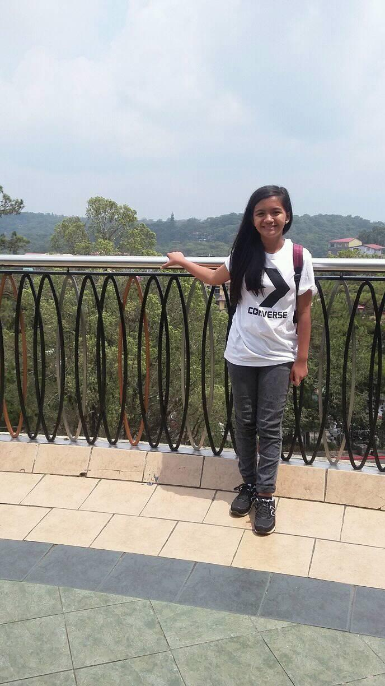

I am LYCA ROSE ARQUITOLA PALINO, 2O years of age. I was born on the year of 2003 on the 5th day of September. I am currently staying at Calumbaya,Dolores, Abra but my real place is in Naguirayan, Pidigan,Abra. I am the first child among my other 2 siblings. Well right now I am still taking a BSIT as a course in my college year and now I am in my third year. Speaking of school, When I was in daycare I Study at Naguirayan Daycare School. When I was in kinder I study at Suyo Elementary School. When I was a grade 2 to grade 6 student I study at Don Rosalio Eduarte Elementary School, I know you are wondering where did I study when I was a grade 1 student well in that grade or year I also study at Suyo Elementary School. In my junior year as a high school student I study at Heart of Mary High School in Dolores Abra while in my senior year I study in St. Mary High School of Pidigan Abra.